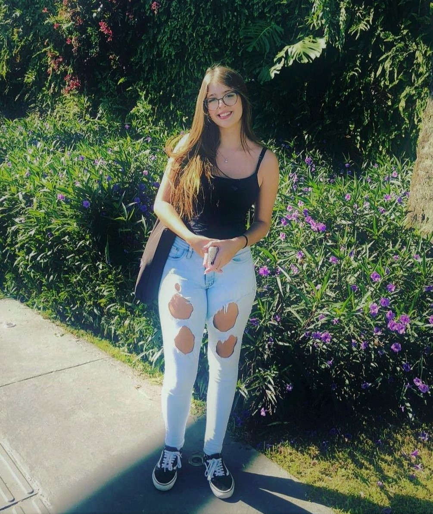

Meu nome é Júlia Pickcius Zanin Pereira e estou criando esta página para compartilhar um pouco sobre mim.
Atualmente, estou no ensino médio com técnico em Desenvolvimento de Sistemas no SESI SENAI e trabalhando na UNIP polo Ingleses na secretária e no marketing digital da empresa. Nesse período meu foco é estudar para o vestibular da UFSC, pretendo cursar Sistemas de Informação e adquirir conhecimento em diversas linguagens de programação.
Atualmente, moro em Florianópolis, SC no bairro Ingleses.
Tenho interesse na área de programação e design.
Para saber mais sobre mim, você pode me encontrar nas seguintes redes sociais: